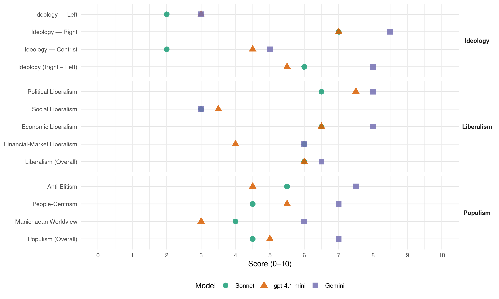

FPÖ (Austria, 1999)
manifesto_id 42420_199910
Get full text: This site shows derived annotations and short verbatim quotes only. The full manifesto text is © Manifesto Project / WZB — obtain it via manifesto-project.wzb.eu using the manifesto_id above.
Headline scores
| Dimension | Sonnet | gpt-4.1-mini | Gemini |
|---|---|---|---|
| Populism (Overall) | 4.5 | 5.0 | 7.0 |
| Anti-Elitism | 5.5 | 4.5 | 7.5 |
| People-Centrism | 4.5 | 5.5 | 7.0 |
| Manichaean Worldview | 4.0 | 3.0 | 6.0 |
| Ideology (Right − Left) | 6.0 | 5.5 | 8.0 |
| Liberalism (Overall) | 6.0 | 6.0 | 6.5 |
| Political Liberalism | 6.5 | 7.5 | 8.0 |
| Social Liberalism | 3.0 | 3.5 | 3.0 |
| Economic Liberalism | 6.5 | 6.5 | 8.0 |
| Financial-Market Liberalism | 6.0 | 4.0 | 6.0 |
Evidence per dimension
Economic Liberalism
Gemini · score 8.0 · verified · chunk 1
“durch freien Wettbewerb in sozialer”
Faire Marktwirtschaft sichert durch freien Wettbewerb in sozialer Verantwortung eine dynamische Wirtschaftsentwicklung. Sie geht von
Gemini · score 8.0 · verified · chunk 2
“mit den öffentlichen Unterrichtsanstalten in einen qualitätsfördernden Wettbewerb”
private Einrichtungen unterstützt werden, um mit den öffentlichen Unterrichtsanstalten in einen qualitätsfördernden Wettbewerb zu treten.
gpt-4.1-mini · score 7.0 · verified · chunk 1
“Eine umfassende Deregulierung des Wirtschaftslebens steigert die Wettbewerbsfähigkeit der Österreichischen Wirtschaft, sichert ihr Gedeihen und schafft Arbeit.”
(4) Eine umfassende Deregulierung des Wirtschaftslebens steigert die Wettbewerbsfähigkeit der Österreichischen Wirtschaft, sichert ihr Gedeihen und schafft Arbeit. (5) Eine umfassende Deregulierung des Wirtschaftslebens wird als Garant für die Prosperität der österreichischen Wirtschaft und Stabilität des Arbeitsmarktes angestrebt.
gpt-4.1-mini · score 6.0 · verified · chunk 2
“Das Österreichische Bildungssystem darf gesellschaftspolitisch weder auf das Bewahren alles Überkommenen, noch auf das Verändern um jeden Preis ausgelegt sein”
…(1) Der Staat hat sicherzustellen, daß dem Grundrecht auf Bildung durch ein breit gefächertes Angebot an qualifiziert hochstehenden Bildungseinrichtungen entsprochen wird. Dabei sollen auch private Einrichtungen unterstützt werden, um mit den öffentlichen Unterrichtsanstalten in einen qualitätsfördernden Wettbewerb zu treten. (2) Das Österreichische Bildungssystem darf gesellschaftspolitisch weder auf das Bewahren alles Überkommenen, noch auf das Verändern um jeden Preis ausgelegt sein, sondern soll Menschen heranbilden, die über ihre Zukunft frei und vernünftig zu entscheiden vermögen.
Sonnet · score 7.0 · verified · chunk 1
“umfassende Deregulierung des Wirtschaftslebens steigert die Wettbewerbsfähigkeit”
Eine umfassende Deregulierung des Wirtschaftslebens steigert die Wettbewerbsfähigkeit der Österreichischen Wirtschaft, sichert ihr Gedeihen und schafft Arbeit.
Sonnet · score 6.0 · verified · chunk 2
“qualitätsfördernden Wettbewerb zu treten”
private Einrichtungen unterstützt werden, um mit den öffentlichen Unterrichtsanstalten in einen qualitätsfördernden Wettbewerb zu treten.
Financial-Market Liberalism
Gemini · score 6.0 · verified · chunk 1
“Entpolitisierung des Bankensektors”
Sozialversicherung, der öffentlichen Wirtschaft und des verpolitisierten Bankensektors aus. (1) Die Freiheitliche Bewegung versteht sich als Anwalt
gpt-4.1-mini · score 4.0 · verified · chunk 1
“Die Beteiligungsmacht der Banken und der Kreditinstitute ist zu beschränken. Die Entpolitisierung des Bankensektors muß durch eine echte Privatisierung vorangetrieben werden.”
(3) Die Beteiligungsmacht der Banken und der Kreditinstitute ist zu beschränken. Die Entpolitisierung des Bankensektors muß durch eine echte Privatisierung vorangetrieben werden. Im gesamten Kreditsektor müssen ein wirksamer Kundenschutz und eine Harmonisierung des Wettbewerbsrechtes durchgesetzt werden.
Sonnet · score 6.0 · verified · chunk 1
“Aufbau eines funktionierenden Österreichischen Kapitalmarktes”
Um dem Ausverkauf der österreichischen Wirtschaft wirksam zu begegnen, ist der Aufbau eines funktionierenden Österreichischen Kapitalmarktes vorrangig. Dazu sind auch gesellschaftsrechtliche Reformen, wie die Schaffung der Klein-AG nach Schweizer Vorbild und eine Reform des Börsenwesens mit starkem Kontrollmechanismus erforderlich.
Political Liberalism
Gemini · score 8.0 · verified · chunk 1
“demokratisch, föderalistisch, und rechtsstaatlich”
Zusammengehörigkeit in regionaler Vielfalt verbunden. Dieser Wille findet seinen Ausdruck in der demokratisch, föderalistisch, und rechtsstaatlich verfaßten Republik
Gemini · score 8.0 · verified · chunk 2
“Teilnahme am demokratischen Leben”
Herstellung von Chancengerechtigkeit, zur Ausübung von Freiheit und zur Teilnahme am demokratischen Leben. Sie dient der
gpt-4.1-mini · score 8.0 · verified · chunk 1
“Eine Demokratie-und Verfassungsreform zur Erneuerung der Republik einzuleiten, deren Ziel die Abkehr vom bürokratischen Obrigkeitsstaat hin zum freiheitlichen Rechtsstaat ist.”
(1) Es ist die vornehmste Aufgabe der Freiheitlichen Bewegung, eine Demokratie-und Verfassungsreform zur Erneuerung der Republik einzuleiten, deren Ziel die Abkehr vom bürokratischen Obrigkeitsstaat hin zum freiheitlichen Rechtsstaat ist. (2) Diese Reform muß zu einer Verstärkung der Grund-und Freiheitsrechte sowie der Bürgerrechte führen.
gpt-4.1-mini · score 7.0 · verified · chunk 2
“Die Freiheitliche Bewegung plädiert für ein privates Mäzenatentum, das über steuerliche Anreize den Kunstmarkt stimuliert”
…(4) Kunst ist Privatsache. Der Staat darf über seine Kunstpolitik keine Geschmacksbevormundung, politische Instrumentalisierung und Subventionsgängelung betreiben. Stattdessen hat der Staat für Rahmenbedingungen zur Gewährleistung der Freiheit der Kunst und ihrer Vielfalt sowie für infrastrukturelle Grundlagen zur künstlerischen Entfaltung zu sorgen. (1) Da ästhetisches Empfinden ausschließlich dem Individuum eigen ist und keinesfalls einer Institution, ist Kunst Privatsache Die Freiheitliche Bewegung plädiert für ein privates Mäzenatentum, das über steuerliche Anreize den Kunstmarkt stimuliert.
Sonnet · score 7.0 · verified · chunk 1
“Liberalisierung der Medienlandschaft mit fairen politischen Wettbewerbsbedingungen”
Der freie Wettbewerb der demokratischen Kräfte kann daher nur über eine Liberalisierung der Medienlandschaft mit fairen politischen Wettbewerbsbedingungen erreicht werden.
Sonnet · score 6.0 · verified · chunk 2
“Teilnahme am demokratischen Leben”
zur Ausübung von Freiheit und zur Teilnahme am demokratischen Leben. Sie dient der Persönlichkeitsentfaltung
Liberalism (Overall)
Gemini · score 7.0 · verified · chunk 1
“Faire Marktwirtschaft”
KAPITEL IX Recht und Ordnung ………………………………………. 26 KAPITEL X Faire Marktwirtschaft…………………………………… 30 ARTIKEL XI
Gemini · score 6.0 · verified · chunk 2
“Teilnahme am demokratischen Leben”
Herstellung von Chancengerechtigkeit, zur Ausübung von Freiheit und zur Teilnahme am demokratischen Leben. Sie dient der
gpt-4.1-mini · score 6.0 · verified · chunk 1
“Eine umfassende Deregulierung des Wirtschaftslebens steigert die Wettbewerbsfähigkeit der Österreichischen Wirtschaft, sichert ihr Gedeihen und schafft Arbeit.”
(4) Eine umfassende Deregulierung des Wirtschaftslebens steigert die Wettbewerbsfähigkeit der Österreichischen Wirtschaft, sichert ihr Gedeihen und schafft Arbeit. (5) Eine umfassende Deregulierung des Wirtschaftslebens wird als Garant für die Prosperität der österreichischen Wirtschaft und Stabilität des Arbeitsmarktes angestrebt.
gpt-4.1-mini · score 6.0 · verified · chunk 2
“Die Freiheitliche Bewegung plädiert für ein privates Mäzenatentum, das über steuerliche Anreize den Kunstmarkt stimuliert”
…(4) Kunst ist Privatsache. Der Staat darf über seine Kunstpolitik keine Geschmacksbevormundung, politische Instrumentalisierung und Subventionsgängelung betreiben. Stattdessen hat der Staat für Rahmenbedingungen zur Gewährleistung der Freiheit der Kunst und ihrer Vielfalt sowie für infrastrukturelle Grundlagen zur künstlerischen Entfaltung zu sorgen. (1) Da ästhetisches Empfinden ausschließlich dem Individuum eigen ist und keinesfalls einer Institution, ist Kunst Privatsache Die Freiheitliche Bewegung plädiert für ein privates Mäzenatentum, das über steuerliche Anreize den Kunstmarkt stimuliert.
Sonnet · score 6.0 · verified · chunk 1
“Entpolitisierung des Bankensektors muß durch eine echte Privatisierung”
Die Beteiligungsmacht der Banken und der Kreditinstitute ist zu beschränken. Die Entpolitisierung des Bankensektors muß durch eine echte Privatisierung vorangetrieben werden.
Sonnet · score 5.0 · mixed · chunk 2
“Freiheit der Kunst und ihrer Vielfalt”
hat der Staat für Rahmenbedingungen zur Gewährleistung der Freiheit der Kunst und ihrer Vielfalt sowie für infrastrukturelle Grundlagen zu sorgen.
Anti-Elitism
Gemini · score 8.0 · verified · chunk 1
“Abhängigkeiten von einer überbordenden Bürokratie”
materiellen Gegebenheiten beschränkt sieht. (2) Abhängigkeiten von einer überbordenden Bürokratie, einem Kammerstaat bis hin zu einem von Parteien
Gemini · score 7.0 · verified · chunk 2
“Künstler gegängelt und politisch instrumentalisiert”
der Subventionsgewährung, Kunstförderung und der Ankaufspolitik werden Künstler gegängelt und politisch instrumentalisiert. Dies hat eine
gpt-4.1-mini · score 7.0 · verified · chunk 1
“Abhängigkeiten von einer überbordenden Bürokratie, einem Kammerstaat bis hin zu einem von Parteien durchdrungenen staatlichen System sollen im Sinne der Prinzipien der Freiheit abgebaut werden.”
(2) Abhängigkeiten von einer überbordenden Bürokratie, einem Kammerstaat bis hin zu einem von Parteien durchdrungenen staatlichen System sollen im Sinne der Prinzipien der Freiheit abgebaut werden. Freiheit steht im Gegensatz zu jeder Form der Unterdrückung, gleichgültig ob sie durch staatliche Einrichtungen oder halbstaatliche und private Vereinigungen ausgeübt wird.
gpt-4.1-mini · score 2.0 · verified · chunk 2
“Die Agrarpolitik der EU steht den erklärten Zielen der Erhaltung der herkömmlichen bäuerlichen Struktur und einer naturnahen, flächenbezogenen Produktionsweise entgegen”
…massiven Einsatz von Chemie genauso aus wie die Möglichkeiten der Genmanipulation. An der Erhaltung alter bäuerlicher Tierrassen und Pflanzensorten als genetische Reserven besteht ebenfalls ein öffentliches Interesse. (3) Die Agrarpolitik der EU steht den erklärten Zielen der Erhaltung der herkömmlichen bäuerlichen Struktur und einer naturnahen, flächenbezogenen Produktionsweise entgegen. Um die Österreichische Landwirtschaft insbesondere vor dem durch die geplante Osterweiterung zu erwartenden finanziellen Kollaps zu bewahren, ist daher dringend eine Re-Nationalisierung der Agrarpolitik anzustreben.
Sonnet · score 7.0 · verified · chunk 1
“Kammerstaat bis hin zu einem von Parteien durchdrungenen staatlichen System”
Abhängigkeiten von einer überbordenden Bürokratie, einem Kammerstaat bis hin zu einem von Parteien durchdrungenen staatlichen System sollen im Sinne der Prinzipien der Freiheit abgebaut werden.
Sonnet · score 4.0 · verified · chunk 2
“politische Instrumentalisierung und Subventionsgängelung”
Der Staat darf über seine Kunstpolitik keine Geschmacksbevormundung, politische Instrumentalisierung und Subventionsgängelung betreiben.
Ideology — Centrist
Gemini · score 5.0 · verified · chunk 1
“die Demokratie bürgernah auszubauen”
dauernder Auftrag für die Freiheitliche Bewegung, die Demokratie bürgernah auszubauen und zu erhalten. Dieser Auftrag schließt die
gpt-4.1-mini · score 7.0 · verified · chunk 1
“Der Österreichpatriotismus äußert sich als Wille zur Eigenständigkeit und Zusammengehörigkeit der Österreicher, als Wille zur Aufrechterhaltung von Demokratie, Menschenrechten, Rechtsstaatlichkeit und Föderalismus”
(1) Der Österreichpatriotismus äußert sich als Wille zur Eigenständigkeit und Zusammengehörigkeit der Österreicher, als Wille zur Aufrechterhaltung von Demokratie, Menschenrechten, Rechtsstaatlichkeit und Föderalismus, als Wille zur Pflege des kulturellen Erbes Österreichs und als Wille zur Erhaltung der Umwelt, Landschaft und Natur.
gpt-4.1-mini · score 2.0 · verified · chunk 2
“Der Staat hat die Autonomie der Wissenschaft zu respektieren und hat daher insbesondere jeden ideologisch motivierten Eingriff zu unterlassen”
…Der Staat hat die Autonomie der Wissenschaft zu respektieren und hat daher insbesondere jeden ideologisch motivierten Eingriff zu unterlassen.
Sonnet · score 2.0 · verified · chunk 1
“Anwalt der Erwerbstätigen im nichtgeschützten Bereich”
Die Freiheitliche Bewegung versteht sich als Anwalt der Erwerbstätigen im nichtgeschützten Bereich.
Sonnet · score 2.0 · verified · chunk 2
“Re-Nationalisierung der Agrarpolitik anzustreben”
ist daher dringend eine Re-Nationalisierung der Agrarpolitik anzustreben. Artikel 3 Der Arbeitsplatz Bauernhof muß erhalten bleiben.
Ideology — Left
Gemini · score 3.0 · verified · chunk 1
“Spielball internationaler Spekulanten und Konzerne”
die Freiheit des Volkes davor, zum Spielball internationaler Spekulanten und Konzerne sowie staatlicher und halbstaatlicher internationaler Institutionen
gpt-4.1-mini · score 4.0 · mixed · chunk 1
“Faire Marktwirtschaft ist die Antwort auf einen schrankenlosen Kapitalismus, der Mensch und Natur ausbeutet, wie auf den gescheiterten Sozialismus, der seine”Werktätigen” zu Verwaltungsobjekten herabwürdigte.”
(2) Faire Marktwirtschaft ist die Antwort auf einen schrankenlosen Kapitalismus, der Mensch und Natur ausbeutet, wie auf den gescheiterten Sozialismus, der seine “Werktätigen” zu Verwaltungsobjekten herabwürdigte. (3) Faire Marktwirtschaft soll ein wirtschaftliches Klima schaffen, das die Leistungsträger zur Selbständigkeit ermuntert und zu Unternehmensgründungen anregt.
gpt-4.1-mini · score 3.0 · verified · chunk 2
“Um die Österreichische Landwirtschaft insbesondere vor dem durch die geplante Osterweiterung zu erwartenden finanziellen Kollaps zu bewahren, ist daher dringend eine Re-Nationalisierung der Agrarpolitik anzustreben”
…Die Agrarpolitik der EU steht den erklärten Zielen der Erhaltung der herkömmlichen bäuerlichen Struktur und einer naturnahen, flächenbezogenen Produktionsweise entgegen. Um die Österreichische Landwirtschaft insbesondere vor dem durch die geplante Osterweiterung zu erwartenden finanziellen Kollaps zu bewahren, ist daher dringend eine Re-Nationalisierung der Agrarpolitik anzustreben.
Sonnet · score 2.0 · verified · chunk 1
“Faire Marktwirtschaft ist die Antwort auf einen schrankenlosen Kapitalismus”
Faire Marktwirtschaft ist die Antwort auf einen schrankenlosen Kapitalismus, der Mensch und Natur ausbeutet, wie auf den gescheiterten Sozialismus, der seine ‘Werktätigen’ zu Verwaltungsobjekten herabwürdigte.
Sonnet · score 2.0 · verified · chunk 2
“Chancengerechtigkeit, zur Ausübung von Freiheit”
Sie ist das kulturelle Instrument zur Herstellung von Chancengerechtigkeit, zur Ausübung von Freiheit und zur Teilnahme am demokratischen Leben.
Ideology (Right − Left)
Gemini · score 8.0 · verified · chunk 1
“Österreich zuerst!”
KAPITEL II Die Menschenwürde ist unantastbar ………………………………………………. 6 KAPITEL 111 Österreich zuerst! ………………………………….. 8 KAPITEL IV
Gemini · score 8.0 · verified · chunk 2
“Zugehörigkeit zur deutschen Kulturgemeinschaft”
als Muttersprache spricht, ergibt sich daraus ihre Zugehörigkeit zur deutschen Kulturgemeinschaft. (2) Der Schutz
gpt-4.1-mini · score 7.0 · verified · chunk 1
“Der Österreichpatriotismus äußert sich als Wille zur Eigenständigkeit und Zusammengehörigkeit der Österreicher, als Wille zur Aufrechterhaltung von Demokratie, Menschenrechten, Rechtsstaatlichkeit und Föderalismus”
(1) Der Österreichpatriotismus äußert sich als Wille zur Eigenständigkeit und Zusammengehörigkeit der Österreicher, als Wille zur Aufrechterhaltung von Demokratie, Menschenrechten, Rechtsstaatlichkeit und Föderalismus, als Wille zur Pflege des kulturellen Erbes Österreichs und als Wille zur Erhaltung der Umwelt, Landschaft und Natur.
gpt-4.1-mini · score 4.0 · verified · chunk 2
“Die Freiheitliche Bewegung betont die Zugehörigkeit der Österreicher zu der durch ihre jeweilige Muttersprache vorgegebenen Kulturgemeinschaft”
…Die Sprache ist die wichtigste Trägerin des kulturellen Ausdruckes. Sie ist daher besonders zu pflegen. Die Freiheitliche Bewegung betont die Zugehörigkeit der Österreicher zu der durch ihre jeweilige Muttersprache vorgegebenen Kulturgemeinschaft; für die Oberwiegende Mehrheit der Österreicher also die deutsche.
Sonnet · score 7.0 · verified · chunk 1
“Multikulturelle Experimente werden abgelehnt”
Multikulturelle Experimente werden abgelehnt, weil durch sie mutwillig gesellschaftliche Konflikte geschürt werden.
Sonnet · score 5.0 · verified · chunk 2
“Zugehörigkeit zur deutschen Kulturgemeinschaft”
ergibt sich daraus ihre Zugehörigkeit zur deutschen Kulturgemeinschaft. Der Schutz und die Pflege der Sprache sind eine öffentliche Aufgabe
Ideology — Right
Gemini · score 9.0 · verified · chunk 1
“Österreich ist kein Einwanderungsland”
beschränkten Ressourcen kein Einwanderungsland. (1) Das Grundrecht auf Heimat gestattet daher keine unbeschränkte und unkontrollierte Zuwanderung nach Österreich.
Gemini · score 8.0 · verified · chunk 2
“Zugehörigkeit zur deutschen Kulturgemeinschaft”
als Muttersprache spricht, ergibt sich daraus ihre Zugehörigkeit zur deutschen Kulturgemeinschaft. (2) Der Schutz
gpt-4.1-mini · score 8.0 · verified · chunk 1
“Österreich ist auf Grund seiner Topographie, seiner Bevölkerungsdichte und seiner beschränkten Ressourcen kein Einwanderungsland.”
Artikel4 Österreich ist auf Grund seiner Topographie, seiner Bevölkerungsdichte und seiner beschränkten Ressourcen kein Einwanderungsland. (1) Das Grundrecht auf Heimat gestattet daher keine unbeschränkte und unkontrollierte Zuwanderung nach Österreich.
gpt-4.1-mini · score 6.0 · verified · chunk 2
“Die Freiheitliche Bewegung betont die Zugehörigkeit der Österreicher zu der durch ihre jeweilige Muttersprache vorgegebenen Kulturgemeinschaft”
…Die Sprache ist die wichtigste Trägerin des kulturellen Ausdruckes. Sie ist daher besonders zu pflegen. Die Freiheitliche Bewegung betont die Zugehörigkeit der Österreicher zu der durch ihre jeweilige Muttersprache vorgegebenen Kulturgemeinschaft; für die Oberwiegende Mehrheit der Österreicher also die deutsche.
Sonnet · score 8.0 · verified · chunk 1
“Österreich ist kein Einwanderungsland”
Österreich ist auf Grund seiner Topographie, seiner Bevölkerungsdichte und seiner beschränkten Ressourcen kein Einwanderungsland. Das Grundrecht auf Heimat gestattet daher keine unbeschränkte und unkontrollierte Zuwanderung nach Österreich.
Sonnet · score 6.0 · verified · chunk 2
“Zugehörigkeit zur deutschen Kulturgemeinschaft”
ergibt sich daraus ihre Zugehörigkeit zur deutschen Kulturgemeinschaft. Der Schutz und die Pflege der Sprache sind eine öffentliche Aufgabe
Manichaean Worldview
Gemini · score 6.0 · verified · chunk 1
“zum Spielball internationaler Spekulanten”
schützt die Freiheit des Volkes davor, zum Spielball internationaler Spekulanten und Konzerne sowie staatlicher und halbstaatlicher internationaler
gpt-4.1-mini · score 6.0 · mixed · chunk 1
“Der zunehmende Fundamentalismus eines radikalen Islams und dessen Vordringen nach Europa, aber auch ein hedonistischer Konsumismus, ein aggressiver Kapitalismus, das Zunehmen von Okkultismus und pseudoreligiösen Sekten und schließlich ein in allen Lebensbereichen vermehrt feststellbarer Nihilismus bedrohen den Wertekonsens”
(2) Die geistigen Grundlagen des Abendlandes sind die Idee der Menschenwürde und der Grundfreiheiten, die daraus abgeleiteten Vorstellungen von Demokratie und Mitbestimmung und der Rechtsstaatlichkeit, die Idee der Solidarität sowie der Respekt vor dem Leben und der Schöpfung. (2) Durch vielfältige Strömungen sind diese Grundlagen jedoch gefährdet. Der zunehmende Fundamentalismus eines radikalen Islams und dessen Vordringen nach Europa, aber auch ein hedonistischer Konsumismus, ein aggressiver Kapitalismus, das Zunehmen von Okkultismus und pseudoreligiösen Sekten und schließlich ein in allen Lebensbereichen vermehrt feststellbarer Nihilismus bedrohen den Wertekonsens, der deshalb verlorenzugehen droht.
gpt-4.1-mini · score 3.0 · verified · chunk 2
“Der gesamtgesellschaftlichen und staatlichen Aufgaben der Erhaltung dieses kulturellen Erbes und der Sicherung der zumeist regionalen kulturellen Identität stehen alle Bestrebungen kultureller Nivellierung oder verordneter Multikultur entgegen und werden daher abgelehnt”
…(2) Der gesamtgesellschaftlichen und staatlichen Aufgaben der Erhaltung dieses kulturellen Erbes und der Sicherung der zumeist regionalen kulturellen Identität stehen alle Bestrebungen kultureller Nivellierung oder verordneter Multikultur entgegen und werden daher abgelehnt. (3) Die Sicherung des kulturellen Erbes erfordert in infrastruktureller Hinsicht die Erhaltung der großen und anerkannten Bühnen für Sprech-und Musiktheater, der Konzertsäle, der Museen und Sammlungen und der Kulturdenkmäler
Sonnet · score 5.0 · verified · chunk 1
“Spielball internationaler Spekulanten und Konzerne”
Eine gestärkte Volkssouveränität schützt die Freiheit des Volkes davor, zum Spielball internationaler Spekulanten und Konzerne sowie staatlicher und halbstaatlicher internationaler Institutionen zu werden.
Sonnet · score 3.0 · verified · chunk 2
“Staatskünstlerturns zur Folge”
Dies hat eine speziell in Österreich herausgebildete Form des Staatskünstlerturns zur Folge. Dadurch wird die Freiheit der Kunst schwerwiegend eingeschränkt.
People-Centrism
Gemini · score 7.0 · verified · chunk 1
“die Freiheit des Volkes davor”
gestärkte Volkssouveränität schützt die Freiheit des Volkes davor, zum Spielball internationaler Spekulanten und Konzerne
gpt-4.1-mini · score 8.0 · verified · chunk 1
“Freiheit steht als höchstes Gut jedem Einzelnen und jeder natürlich gewachsenen Gemeinschaft, von der Familie bis zum Volk, unverzichtbar zu.”
Artikel2 Freiheit steht als höchstes Gut jedem Einzelnen und jeder natürlich gewachsenen Gemeinschaft, von der Familie bis zum Volk, unverzichtbar zu. (1) Es entspricht freiheitlicher Geisteshaltung. dem einzelnen Menschen die Freiheit als höchstes Gut einzuräumen und darin gleichzeitig einen unverzichtbaren Wert zu sehen.
gpt-4.1-mini · score 3.0 · verified · chunk 2
“Die Freiheitliche Bewegung betont die Zugehörigkeit der Österreicher zu der durch ihre jeweilige Muttersprache vorgegebenen Kulturgemeinschaft”
…Die Sprache ist die wichtigste Trägerin des kulturellen Ausdruckes. Sie ist daher besonders zu pflegen. Die Freiheitliche Bewegung betont die Zugehörigkeit der Österreicher zu der durch ihre jeweilige Muttersprache vorgegebenen Kulturgemeinschaft; für die Oberwiegende Mehrheit der Österreicher also die deutsche.
Sonnet · score 6.0 · verified · chunk 1
“gestärkte Volkssouveränität schützt die Freiheit des Volkes”
Eine gestärkte Volkssouveränität schützt die Freiheit des Volkes davor, zum Spielball internationaler Spekulanten und Konzerne sowie staatlicher und halbstaatlicher internationaler Institutionen zu werden.
Sonnet · score 3.0 · verified · chunk 2
“Grundrecht auf Bildung”
Es besteht ein Grundrecht auf Bildung. Sie ist das kulturelle Instrument zur Herstellung von Chancengerechtigkeit
Populism (Overall)
Gemini · score 7.0 · verified · chunk 1
“Reduzierung des Einflusses von Parteien”
Wettbewerb der demokratischen Kräfte im Rahmen des Mehrparteiensystems einerseits und eine Reduzierung des Einflusses von Parteien und Verbänden andererseits.
Gemini · score 7.0 · verified · chunk 2
“Künstler gegängelt und politisch instrumentalisiert”
der Subventionsgewährung, Kunstförderung und der Ankaufspolitik werden Künstler gegängelt und politisch instrumentalisiert. Dies hat eine
gpt-4.1-mini · score 7.0 · verified · chunk 1
“Abhängigkeiten von einer überbordenden Bürokratie, einem Kammerstaat bis hin zu einem von Parteien durchdrungenen staatlichen System sollen im Sinne der Prinzipien der Freiheit abgebaut werden.”
(2) Abhängigkeiten von einer überbordenden Bürokratie, einem Kammerstaat bis hin zu einem von Parteien durchdrungenen staatlichen System sollen im Sinne der Prinzipien der Freiheit abgebaut werden. Freiheit steht im Gegensatz zu jeder Form der Unterdrückung, gleichgültig ob sie durch staatliche Einrichtungen oder halbstaatliche und private Vereinigungen ausgeübt wird.
gpt-4.1-mini · score 3.0 · verified · chunk 2
“Die Agrarpolitik der EU steht den erklärten Zielen der Erhaltung der herkömmlichen bäuerlichen Struktur und einer naturnahen, flächenbezogenen Produktionsweise entgegen”
…massiven Einsatz von Chemie genauso aus wie die Möglichkeiten der Genmanipulation. An der Erhaltung alter bäuerlicher Tierrassen und Pflanzensorten als genetische Reserven besteht ebenfalls ein öffentliches Interesse. (3) Die Agrarpolitik der EU steht den erklärten Zielen der Erhaltung der herkömmlichen bäuerlichen Struktur und einer naturnahen, flächenbezogenen Produktionsweise entgegen. Um die Österreichische Landwirtschaft insbesondere vor dem durch die geplante Osterweiterung zu erwartenden finanziellen Kollaps zu bewahren, ist daher dringend eine Re-Nationalisierung der Agrarpolitik anzustreben.
Sonnet · score 6.0 · verified · chunk 1
“Herrschaft der Parteifunktionäre in der staatsnahen Wirtschaft”
durch die Reduzierung des Einflusses der Interessenvertretungen und durch ihre Beschränkung auf ihre eigentlichen Aufgaben soll die Herrschaft der Parteifunktionäre in der staatsnahen Wirtschaft abgeschafft werden.
Sonnet · score 3.0 · verified · chunk 2
“politische Instrumentalisierung und Subventionsgängelung”
Der Staat darf über seine Kunstpolitik keine Geschmacksbevormundung, politische Instrumentalisierung und Subventionsgängelung betreiben.
Social Liberalism